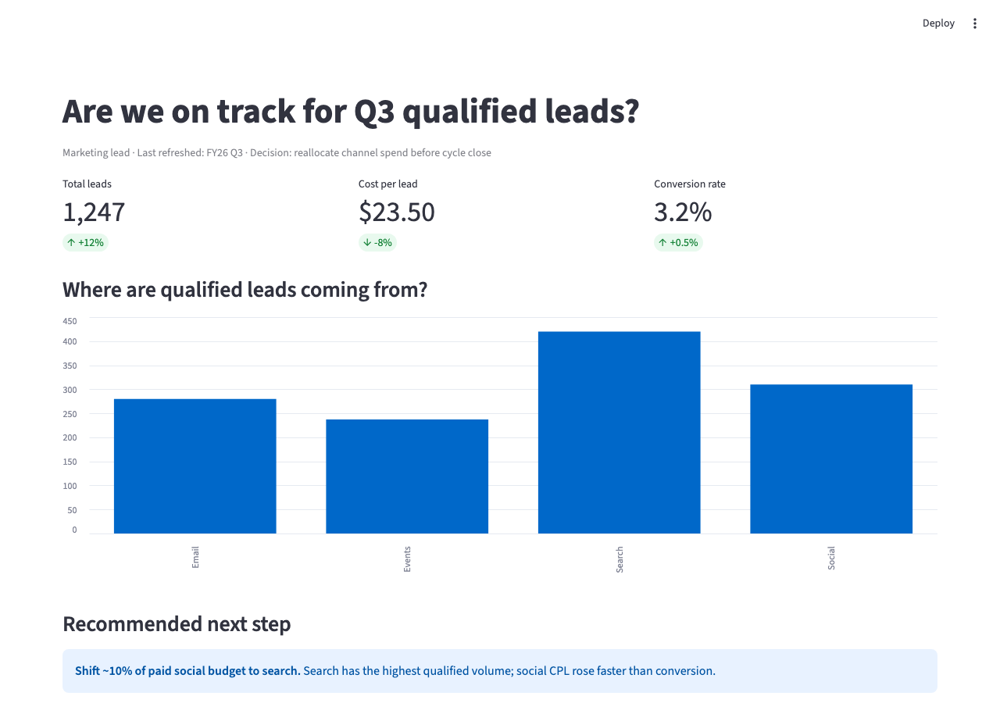
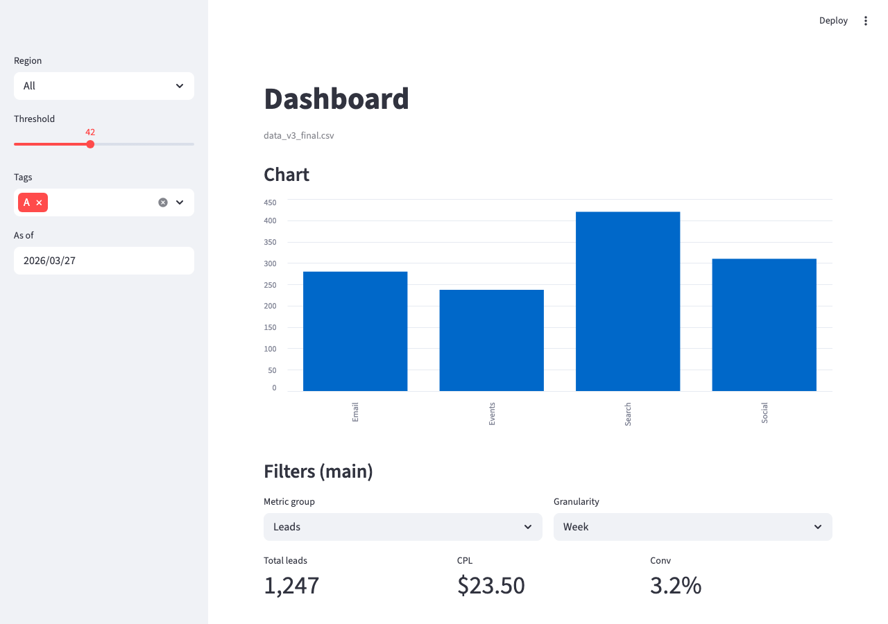

The hard problems shifted from physical (noise, voltage, timing) to semantic (column meaning, NaN values, aggregation correctness).
Semantic problem: What does this column actually mean? Why are there 847 NaN values in a dataset that’s supposed to be complete?
Key question: Did the AI write that aggregation correctly, or did it silently drop the rows it couldn’t handle?
“When the GIX Facilities Coordinator is fielding twenty onboarding questions per new cohort, they want automated answers so they can reclaim three hours every quarter.”
make a bar chart of the
building permits dataAI guesses column names, aggregation method, axis labels, and chart type. Every guess is a silent failure point.
CTOC = Context, Task (Objective), Output format, Constraints
You are a data analyst.
Task/Objective: Create a Plotly Express
bar chart for permit counts by neighborhood.
Context:
"""DataFrame: seattle_permits
Columns: permit_type, neighborhood,
application_date, issue_date, value,
contractor"""
Output format:
1) Python code only
2) Group by neighborhood and count rows
3) Sort descending, top 15
4) Print dropped_row_count
Constraints:
- Drop rows with null neighborhood
- Do not use sum(value)The difference: this is no longer guesswork. Framework fields make output repeatable, reviewable, and easier to debug when it fails.
Why this slide matters: pretty prompts cannot fix missing system context (real columns, allowed tools, what “done” means). Engineering context is how you prevent silent success.
Prompt-level fixes: CTOC clarifies intent, fields, and output format. Context-level fixes: attach schema, tool boundaries, and verification hooks so bad assumptions cannot survive.
Prompt engineering is how you write one high-quality instruction for one generation step. CTOC is your Week 4 baseline framework.
It maps to common framework anatomy used in industry: context, objective, format, and guardrails. In Week 4, stay single-turn: one frameworked prompt, one generation step, then verify.
Four fields. That’s the 40% planning phase translated into a reusable prompt schema.
Extension rule: if audience/tone matters, add style/tone/audience fields (for example, COSTAR) on top of CTOC.
CTOC with explicit output contract + guardrails (filled below).
Instruction: Generate Python code for one Plotly chart.
Python code only; no markdown and no explanation.
Context: """Seattle building permits DataFrame.
Columns: permit_type, neighborhood,
application_date, issue_date, value, contractor"""
Task: Objective is permit volume by neighborhood.
Group by neighborhood and count rows.
Output: Return valid Python using Plotly Express.
- Figure title: "Building Permits by Neighborhood"
- X-axis: neighborhood, Y-axis: permit_count
- Sort descending and keep top 15
- Rotate x labels to 45 degrees
- Print dropped_row_count
Constraints: Drop rows where neighborhood is NaN
before grouping. Do not infer new columns.
If a required column is missing, raise ValueError.Make a bar chart of building
permits by neighborhood.Model must guess columns, aggregation, null handling, and chart contract. Each guess is a silent failure point.
Bundle: real column list + objective (row counts, not dollars) + output spec + NaN rule + ValueError if schema missing + asserts after run.
Same model — fewer wrong turns because the environment removed ambiguity before generation.
Context pack = what you attach at generation time: schema, tool/API contracts, run state, and what you deliberately omit (signal density over volume).
Read more: Anthropic — Effective context engineering for AI agents · Faros — Context engineering for developers · Vijaykumar — Context Engineering 1&2
Principle: seek the smallest set of high-signal tokens that maximize the odds of a correct completion (vs. stuffing the window). This is the core shift from prompt tweaking to context engineering described in Anthropic’s agent-context guidance.
Frameworks make prompts consistent; context engineering makes the whole operating envelope consistent. Verification (asserts, spot checks) still closes the loop.
Schema + objective + output contract + guardrails. Best default for pandas / Plotly generation and dashboard logic.
COSTAR layers audience/tone on top of CTOC. RACE is a compact memo when stakes are low and ambiguity is already solved elsewhere.
Heuristic: if missing context would force the model to guess about data shape or tools, fix context first — swapping frameworks rarely fixes that.
Start minimal; add context only when a failure mode appears.
Right-altitude instructions: specific, not brittle rule soup.
Put instructions first; delimit data with fences.
Prefer a few canonical examples over long edge-case lists.
Design tools like APIs: clear names, non-overlapping jobs, token-efficient returns.
JIT retrieval: pointers + fetch details at runtime.
Hybrid preload: stable standards + exploratory snippets.
Compact before you hit context rot; keep decisions + open issues.
Externalize durable notes (playbooks) for long tasks.
Version prompts like code; humans own architecture + eval gates.
Hint: for factual extraction and transforms, keep temperature low (often near 0) to reduce sampling noise.
Rule of thumb: Start with Streamlit native to explore, switch to Plotly before you show anyone.
st.set_page_config(
page_title="Decision-Maker Dashboard",
page_icon="📊",
layout="wide",
initial_sidebar_state="expanded"
)@st.cache_data
def load_data(uploaded_file):
df = pd.read_csv(uploaded_file)
return dflayout="wide" is non-negotiable for dashboards. The default narrow column is wrong for chart-heavy layouts.
@st.cache_data caches the return value. Without it, every slider move re-reads the CSV from disk.
col1, col2, col3 = st.columns(3)
col1.metric("Total Leads", 1247, delta="+12%")
col2.metric("Cost per Lead", "$23.50",
delta="-8%", delta_color="inverse")
col3.metric("Conversion Rate", "3.2%", delta="+0.5%")st.columns(3) splits horizontal space into equal-width containers. Three columns, three KPI cards.
delta_color="inverse" — a decrease in cost is good news. Business logic in one keyword argument.

Same synthetic data: headline and caption state the decision, KPIs answer “what happened?,” chart supports “why?,” and an action closes the loop.

Same data: widgets and chart come first; the viewer never sees what decision this supports or what to do next.
A dashboard without an action layer is a report. A dashboard with one is a decision tool.
AI wrote the KPI in 3 lines. It takes a larger block of asserts to know whether to trust it. That ratio doesn’t change.
assert len(df) > 0
assert 'leads' in df.columnsDoes the data exist? Right columns?
assert df['leads'].dtype in
['int64', 'float64']
assert df['date'].dtype ==
'datetime64[ns]'Date-as-string bugs live here.
assert df['leads'].min() >= 0
assert df['spend'].max() < 1_000_000Catches NaN bugs and data errors.
assert grouped['leads'].sum().sum()
== df['leads'].sum()
assert len(filtered) <= len(df)Do the parts add up to the whole?
Never delete an assert because it’s inconvenient. That’s like unplugging a smoke detector because it keeps going off.
# Does the KPI match the chart?
assert kpi_total == chart_df['leads'].sum()
# Does the filter actually filter?
assert filtered_df['region'].unique() == ['West']Every dropna() is a design decision. Which rows vanish? Are they random, or do they correlate with a demographic?
Check: does your cleaning step disproportionately remove data from one group?
Verification ladder rung 3 (assert). Next: security checks in Week 6.
Lab Component A: you will attend a staff interview, take notes, and turn what you hear into a JTBD statement, a story-to-prompt mapping (each row ties a story element to a prompt constraint), and your main scaffold prompt for the Streamlit build.
Guest: Cristie Chase, Assistant Director of Finance & Operations
She builds multi-year enrollment and tuition projections in Excel and needs a more dynamic way to model growth scenarios and visualize financial impact—including net operating revenue dashboards and tuition sensitivity analysis.
Scaffold prompt quality bar: spell out who is deciding and what decision the dashboard supports; which data (file, key columns, grain); layout in words (e.g. headline → KPIs → charts → recommendation); and verification (e.g. ask for assert checks on transformations).